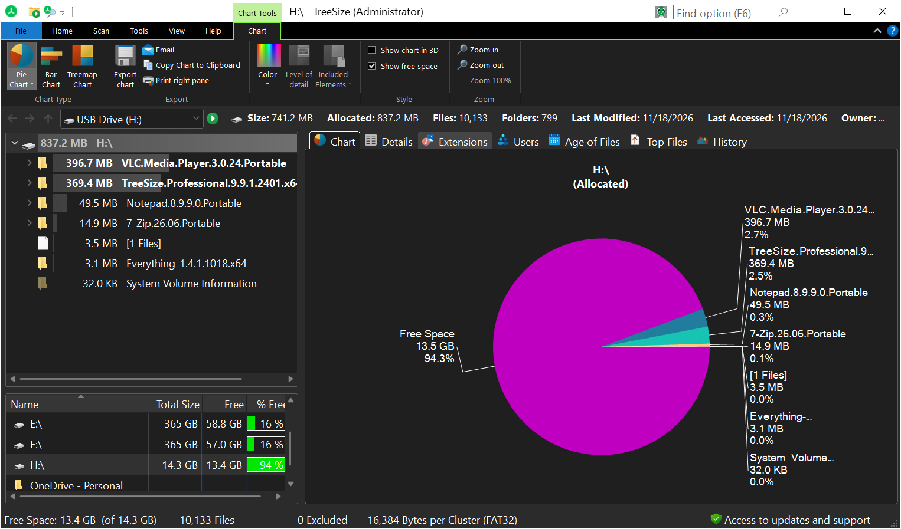

Building a Software Toolkit
Portable IT Toolkit — introducing and preparing at least five portable tools for IT work.
01 / Mission goal
The goal of this project is to build a portable toolkit on a flash drive that runs commonly used IT support tools without installation and without making changes to the host system. These tools are used for file search, disk space analysis, text and image editing, compression, screen recording and media playback.
The problem examined is how to carry a complete set of tools on one flash drive and run it quickly, with a minimal footprint, on different systems. The expected output is a well-organized flash drive with 5 ready-to-run tools, along with documentation and a test on a second system.
02 / Tools and runtime environment
| Tool | Purpose | Category |
|---|---|---|
| Everything | Instant search of files and folders on NTFS disks | File management |
| TreeSize | Showing folder sizes and finding large files and folders | Disk space analysis |
| Notepad++ | Text and code editor supporting many languages | Text editing |
| 7-Zip | Compression and extraction of many archive formats | File utility |
| VLC | Multi-format audio and video player | Multimedia |
Runtime environment: flash drive model and capacity: 16GB-v813 · file system: · test operating system: Windows 10
File system note: FAT32 does not accept files larger than 4 GB. For OBS recordings and larger flash drives, exFAT or NTFS is more suitable.
03 / Execution steps
- Format the flash drive with a suitable file system and give it a name, for example
ToolKit. - Create the folder structure, a separate folder for each tool.
- Download the portable or ZIP version of each program from the developer's official website.
- Extract each tool into its own folder.
- Enable portable mode in programs that need it. For example, in OBS, creating an empty file named
portable_mode.txtnext to the executable makes the settings be stored on the flash drive itself. - (Optional) Create a simple launcher with a batch file that opens the programs using relative paths.
- Test the run on another system and check that the settings remain on the flash drive.
04 / Evidence and execution screenshots



05 / Findings and technical analysis
| Tool | Size on flash drive | Needs Admin | Settings persistence on the flash drive |
|---|---|---|---|
| Everything | 3MB | For NTFS indexing, either the Everything service must be installed or the program must be run as Admin | The ZIP version keeps settings locally |
| TreeSize | 300MB | Runs without Admin; to calculate the size of all folders it must be run as Admin | The ZIP version keeps settings locally |
| Notepad++ | 40MB | Does not require administrator access | Local, in the program folder |
| 7-Zip | 3.5MB | Does not require administrator access | Local, in the program folder |
| VLC | 380MB | Does not require administrator access | By creating a portable subfolder next to the program |
Analytical notes:
- Run speed depends on the USB type and the flash drive's read and write speed. Heavier programs such as OBS and Paint.NET start more slowly from a slow flash drive.
- Administrator access: tools such as Everything and TreeSize need higher privileges for a full disk scan; without them the result may be incomplete or slower.
- Footprint on the host system: truly portable programs keep their settings next to themselves, but some may leave temporary files or Recent entries on the host system.
- Dependencies: some programs need runtimes such as Visual C++ or .NET on the host system, which conflicts with being completely “install-free.”
- Space usage: OBS and VLC take up most of the size. Compare the total size of the toolkit with the flash drive's capacity.
06 / Problems and solutions
| Problem | Solution |
|---|---|
| SmartScreen or antivirus warning for downloaded files | Download only from the official website and verify the file's digital signature |
| Drive letter changes on different systems | Use relative paths in the launcher instead of a fixed path |
| OBS settings not saved on the flash drive | Enable portable mode before the first run |
| Slow run from the flash drive | Use USB 3.x or temporarily copy to an SSD |
| Everything and TreeSize results are incomplete | Run with Run as Administrator |
| Flash drive suddenly disconnects during recording | Record to the system disk, move to the flash drive afterwards, and use Eject for safe removal |
07 / Summary and lessons learned
- The concept of portable software and how it differs from installed software, i.e. keeping settings next to the program and not in the system registry.
- The importance of relative paths and an organized folder structure.
- The effect of the file system and USB speed on the user experience.
- Security considerations: download from a trusted source, scan the flash drive and be careful when connecting to unknown systems.
- The importance of testing in a real environment, because working on one system does not guarantee working on another.